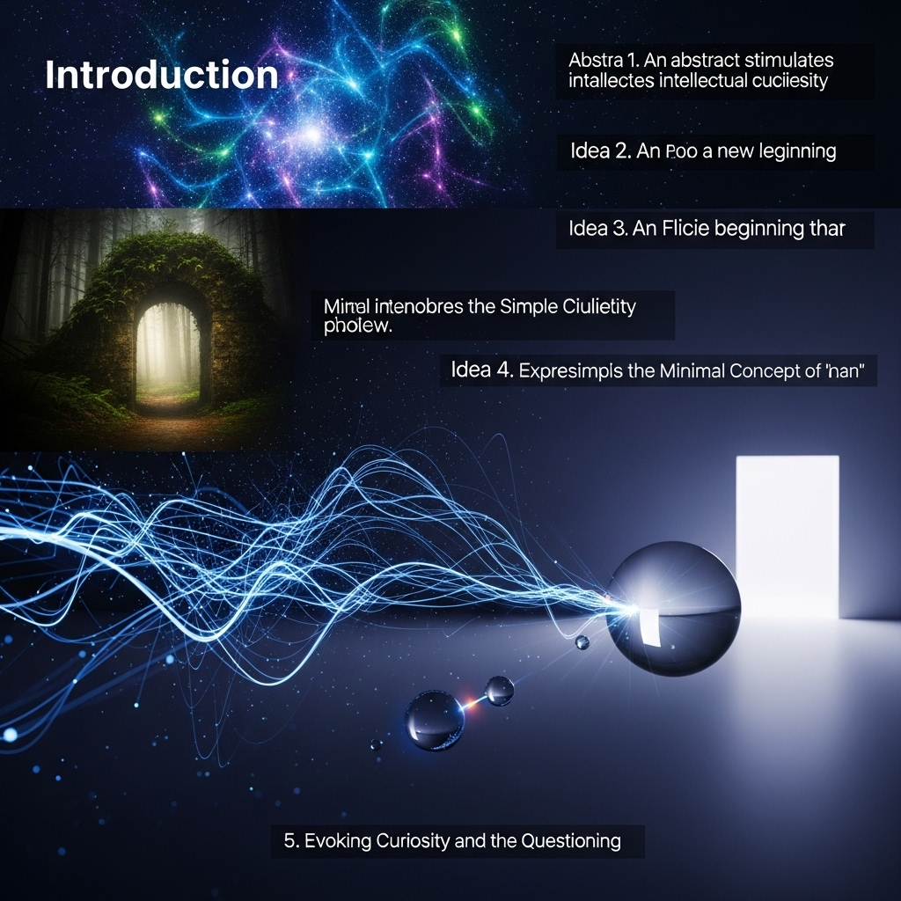

「nan」の向こう側へ：数値化できない「ゆたかさ」を見つける旅
導入

私たちの日常は、いつのまにか、たくさんの「数字」で満たされるようになりました。朝、目を覚ませばスマートフォンが昨夜の睡眠スコアを教えてくれ、通勤途中にはSNSの「いいね」の数が気になり、職場に着けば達成すべき目標が具体的な数値（KPI）で示されています。体重計の数字に一喜一憂し、銀行口座の残高を眺めては安堵したり、不安になったり。私たちはまるで、人生という広大な地図の上を、数字という名のコンパスだけを頼りに歩いている旅人のようです。
数字は、確かに便利です。物事を客観的に捉え、目標を明確にし、他者と共通の認識を持つための、強力なツールとなってくれます。複雑で曖昧な世界を、少しだけ分かりやすく整理してくれる心強い味方と言えるかもしれません。
けれど、ふと立ち止まって周りを見渡したとき、こんな疑問が頭をよぎることはないでしょうか。
「本当に、大切なものはすべて数字で測れるのだろうか？」
誰かを心から愛おしいと思う気持ち。夕焼けの空の美しさに、思わず息をのんだ瞬間の感動。気の置けない友人と過ごす、何でもないけれどかけがえのない時間。失敗から学んだ、言葉にしがたい教訓。これらは、一体どんな数字で表すことができるのでしょう。
コンピューターの世界には、「nan」という言葉があります。「Not a Number」の略で、「数字ではない」という意味です。計算結果が定義できなかったり、数値として表現できなかったりするときに、この「nan」が表示されます。
もしかしたら、私たちの人生における本当に大切なものたちは、この「nan」という表示がぴったりなのかもしれません。数値化しようとすればするほど、その本質が指の間からこぼれ落ちていってしまうような、そんな、かけがえのない価値。
この記事は、そんな「nan」の世界を探求する、あなたとの長い対話です。数字に少しだけ疲れてしまった心に、そっと寄り添いながら、数値化できないものの価値を再発見していく旅にお連れします。効率や成果といった尺度から一度離れて、私たちの内側にある「ゆたかさ」の源泉を、一緒に見つけにいきませんか。
慌ただしい日常の中で見失いがちな、けれど、私たちの人生を確かに彩ってくれる、温かく、柔らかな光。その光がどこにあるのかを、これからゆっくりと考えていきたいと思います。どうぞ、肩の力を抜いて、お付き合いいただけたら嬉しいです。
第1章：私たちは「数値」の世界に生きている
私たちの暮らしが、いかに深く「数値」と結びついているか。そのことを、まずは少しだけ、丁寧に見ていくことから始めましょう。意識していなければ通り過ぎてしまうほど、それは当たり前の風景として、私たちの日常に溶け込んでいます。しかし、その風景を一度じっくりと眺めてみると、私たちが無意識のうちに、どれほど数値という「ものさし」に頼り、そして影響されているかに気づかされるはずです。
1-1. 計測される日常
朝の目覚めから、夜の眠りにつくまで、私たちの1日は数多くの数値に囲まれています。
例えば、朝。多くの人が、スマートウォッチやスマートフォンアプリで睡眠の質をチェックすることから1日を始めます。「深い睡眠が全体の25%」「睡眠スコアは85点」。良い数値が出れば、なんだか良い1日が始まりそうな気がしますし、悪い数値なら、昨夜の過ごし方を少し反省するかもしれません。体重計に乗れば、昨日からの増減が0.1kg単位で表示され、その日の食事内容を左右することもあります。
家を出れば、今度は社会との関わりの中で、さらに多くの数値が私たちを待ち受けます。
SNSを開けば、自分の投稿についた「いいね」やリツイートの数、フォロワーの増減が目に飛び込んできます。その数字は、時に私たちの自己肯定感を揺さぶり、他者からの承認を渇望させます。誰かの華やかな投稿に並ぶ大きな数字を見て、自分の日常が少し色褪せて見えてしまう、そんな経験をしたことがある方も少なくないのではないでしょうか。
職場では、数値はさらに明確な力を持つようになります。売上目標、契約件数、顧客満足度、プロジェクトの進捗率。これらはKPI（Key Performance Indicator：重要業績評価指標）と呼ばれ、私たちの働きぶりを評価し、給与や昇進を決定づける重要な要素となります。目標数値を達成すれば賞賛され、未達であれば改善を求められる。仕事の成果が、極めて分かりやすい形で可視化される世界です。
プライベートな時間に目を向けても、やはり数値は存在します。ランニングアプリは走行距離とペースを記録し、フィットネスジムでは消費カロリーが表示されます。趣味のオンラインゲームでは、自分のスキルが「ランク」や「レート」といった数値で示され、他のプレイヤーと競い合います。子どもの教育に目を向ければ、テストの点数や偏差値が、その子の能力を測る指標として重くのしかかってきます。
年収、貯金額、家の広さ、所有する車のグレード。これらは、社会的な成功を測るための、暗黙の了解とも言える指標です。私たちは、これらの数値を他者と比較し、自分の立ち位置を確認しようとします。そして、より大きな数値を手に入れることが、より良い人生を送ることだと、無意識のうちに信じてしまっているのかもしれません。
このように、私たちの生活は、健康、人間関係、仕事、趣味、そして人生そのものに至るまで、あらゆる側面が数値化され、計測され、評価されるシステムの中に組み込まれています。それはまるで、目に見えないスコアボードが常に頭上に掲げられているようなもの。私たちは、そのスコアを少しでも上げようと、日々奮闘しているのです。
1-2. なぜ私たちは数値を求めるのか？
では、なぜ私たちはこれほどまでに数値を求め、それに依存するようになったのでしょうか。その背景には、人間の根源的な欲求と、社会の歴史的な変化が深く関わっています。
一つ目の理由は、「安心感」です。未来は不確実で、世界は複雑で、曖昧なことばかりです。そんな中で、数値は私たちに明確な指針と現在地を教えてくれます。例えば、「ダイエットのために3kg痩せる」という目標は、「健康的な体を手に入れる」という曖昧な目標よりも、具体的で行動に移しやすいですよね。日々の体重の変化というフィードバックがあることで、自分の努力が正しい方向に進んでいるかを確認でき、モチベーションを維持しやすくなります。数値は、混沌とした世界の中で、私たちが道に迷わないように照らしてくれる灯台の光のような役割を果たしてくれるのです。
二つ目の理由は、「比較」による自己認識です。人間は社会的な生き物であり、常に他者との関係性の中で自分を位置づけようとします。数値は、そのための最も手軽で分かりやすい「ものさし」となります。テストの平均点より自分の点数が高ければ優越感を抱き、低ければ劣等感を抱く。友人の年収を知って、自分のキャリアについて思いを巡らせる。SNSのフォロワー数で、自分の影響力を測ろうとする。良くも悪も、私たちは他者との比較を通じて、「自分は今、どのあたりにいるのか」を把握し、自己イメージを形成しているのです。
三つ目の理由は、「効率化」への渇望です。特に近代以降、科学技術の発展とともに、社会はより速く、より合理的に物事を進めることを重視するようになりました。産業革命が工場の生産性を数値で管理することを可能にし、資本主義が利益という数値を最大化することを至上命題としました。その流れは現代のビジネスシーンにも色濃く受け継がれており、「時間対効果」や「費用対効果」といった言葉が日常的に使われます。無駄をなくし、最短ルートで最大の結果を得るために、あらゆる事象を数値化して分析し、改善を繰り返す。この思考法は、私たちの社会を豊かにし、多くの問題を解決してきた原動力であることもまた事実です。
これらの「安心感」「比較」「効率化」といった欲求は、人間が生き残り、社会を発展させていく上で、ごく自然なものと言えるでしょう。数値は、その欲求を満たすための、非常に強力で魅力的なツールなのです。だからこそ私たちは、知らず知らずのうちに、その魅力に引き寄せられ、あらゆるものを数値のレンズを通して見るようになってしまったのかもしれません。
1-3. 数値化の光と影
もちろん、数値化がもたらす恩恵は計り知れません。医療の分野では、精密な検査データが病気の早期発見と的確な治療を可能にします。経済の分野では、様々な統計データが政策決定の重要な基盤となります。スポーツの世界では、データ分析が選手のパフォーマンスを飛躍的に向上させました。目標を数値で設定することは、私たちの自己成長を促し、達成感という喜びを与えてくれます。数値は、正しく使えば、私たちの生活をより良く、より豊かにするための素晴らしい道具となるのです。
しかし、その光が強ければ強いほど、落とす影もまた濃くなります。私たちが直面しているのは、まさにその「影」の部分です。
最大の問題は、数値に囚われることによる「見えない価値の軽視」です。数値で測れるものは分かりやすい。だからこそ、私たちはそちらにばかり目を向けてしまいがちです。その結果、数値化できない、あるいはしにくいものの価値が、相対的に低く見積もられてしまうのです。
例えば、仕事において。売上や契約件数といった数値目標ばかりを追い求めるあまり、顧客との長期的な信頼関係の構築や、チーム内の良好な人間関係、社員一人ひとりの創造性や働く喜びといった、すぐには数値に表れない大切な要素が疎かになってしまうことがあります。短期的な数値を達成するために、本来の目的である「顧客を幸せにする」「社会に貢献する」という本質が見失われてしまう。これは、多くの組織が抱えるジレンマではないでしょうか。
教育の現場でも同じことが言えます。テストの点数や偏差値という分かりやすい数値が子どもの評価のすべてであるかのように扱われると、子どもたちは点数を取ること自体が目的になってしまいます。知的好奇心や探求心、他者と協力する力、失敗を恐れずに挑戦する心といった、テストでは測れないけれど、人間として成長する上で非常に重要な資質を育む機会が失われてしまうかもしれません。
そして、この問題は私たちの心にも深く影響を及ぼします。SNSの「いいね」の数で自分の価値を測り、フォロワーの数で自分の存在意義を確認しようとする。他人の輝かしい数値と自分を比較しては、落ち込んだり、嫉妬したりする。睡眠スコアが低いだけで、その日1日、何となく体調が悪いような気がしてしまう。私たちは、いつの間にか数値の奴隷となり、自分自身の感覚や感情よりも、外部から与えられた数値を信じるようになってしまっているのかもしれません。
これは、一種の「人間性の喪失」とも言える状態です。私たちの内面にある複雑で、豊かで、時には矛盾した感情や感覚。それらをすべて無視して、ただ一つの、冷たく無機質な数値という尺度で自分自身や他人を判断してしまう。その先にあるのは、燃え尽き症候群や精神的な不調、そして「何のために生きているのだろう」という、根源的な空虚感です。
数値は、あくまで世界の一側面を切り取ったスナップショットに過ぎません。それ自体が良いものでも悪いものでもなく、単なる情報です。しかし、私たちがその数値を絶対的な真実であるかのように崇め、それに一喜一憂し、人生の羅針盤のすべてを委ねてしまったとき、私たちは道を見失います。
数値という光が照らし出す道を歩むことは、確かに効率的で安心かもしれません。しかし、その光が届かない、薄暗いけれど広大で豊かな領域にこそ、人生の本当の宝物が眠っているのではないでしょうか。
次の章では、その光の届かない場所、「nan」と表示されてしまうような、かけがえのない価値の世界へと、足を踏み入れてみたいと思います。
第2章：「nan」と表示される、かけがえのないものたち
数値という便利な定規では、どうしても測りきれないものがあります。それは、私たちの心を震わせ、人生に深みと彩りを与えてくれる、かけがえのない宝物のようなものです。コンピューターが計算不能な値を「nan」と表示するように、私たちの人生にもまた、数値化しようとするとその本質が消えてしまう「nan」な価値が存在します。この章では、そんな愛おしい「nan」の世界を、いくつかの側面からゆっくりと旅してみたいと思います。
2-1. 愛情と信頼のグラデーション
もし誰かに、「あなたのパートナーへの愛情を0から100の数値で表してください」と尋ねられたら、どう答えるでしょうか。おそらく、多くの人が答えに窮するはずです。たとえ無理やり「100です」と答えたとしても、その数字は、あなたの抱いている複雑で温かい感情の、ほんの一片すら表現できていないと感じるのではないでしょうか。
愛情や友情、家族との絆といった、人と人との結びつきは、本質的に「nan」です。
例えば、長年連れ添った夫婦の間に流れる、穏やかで空気のような信頼感。それは、「愛情スコア」などというものでは到底測れません。共に乗り越えてきた数々の困難、何気ない日常の中で交わした言葉の数々、相手の喜びを自分のことのように感じ、悲しみにそっと寄り添った時間。それらすべてが複雑に織り合わさって、二人にしか分からない、唯一無二の関係性を形作っています。その関係性の価値は、年数やプレゼントの金額といった数値で代替できるものでは決してありません。
親が子を想う無償の愛もまた、数値化とは最も遠い場所にある感情です。夜泣きする赤ん坊を抱きしめたときの温もり、初めて「パパ」「ママ」と呼んでくれたときの感動、転んで泣いている我が子を励ましたときの切なさ。これらの瞬間瞬間の積み重ねが、「親子」という特別な絆を育んでいきます。そこには、見返りを求める計算も、損得勘定もありません。ただ、そこにいるだけで愛おしいという、理屈を超えた感情があるだけです。
友人との関係も同じです。何時間でも他愛ない話で笑い合える心地よさ。自分が本当に困ったときに、黙ってそばにいてくれる安心感。「君なら大丈夫だよ」という一言が、どれほどの勇気をくれるか。これらの信頼関係は、「友達の数」や「連絡を取り合う頻度」といったデータでは、その深さを測ることはできません。一人ひとりの友人との間に、それぞれ異なる色合いと手触りの、特別な物語が存在するのです。
私たちは、言葉にならないコミュニケーションを通じて、心の深い部分で繋がり合っています。相手の些細な表情の変化から気持ちを察したり、沈黙の中に込められた思いを感じ取ったり。以心伝心という言葉があるように、言葉や数値を超えたレベルでの理解が、人間関係をより豊かで強固なものにしてくれます。
もし、これらの大切な関係性を無理やり数値化しようとすれば、どうなるでしょうか。「今月の愛情ポイントは80点だったから、来月は90点を目指そう」などと考え始めたら、それはもう、本来の愛情とは似て非なるものになってしまいます。関係性は、管理し、最適化するものではなく、育み、味わうもの。そこにあるのは、明確な境界線のない、美しいグラデーションの世界なのです。
2-2. 感動という心の震え
ある晴れた日の夕暮れ時、あなたは丘の上に立ち、空が茜色から深い藍色へと刻一刻と表情を変えていく様子を、ただじっと眺めていたとします。その壮大な美しさに、あなたは思わず言葉を失い、胸の奥から熱いものがこみ上げてくるのを感じます。この体験を、誰かにどう伝えればよいでしょうか。
「今日の夕焼けの感動スコアは95点だったよ」
そう言った瞬間に、あの場で感じた、魂が震えるような感覚は、乾いた報告書のように色褪せてしまうでしょう。
芸術や自然に触れたときに私たちが経験する「感動」もまた、典型的な「nan」の価値です.
美術館で一枚の絵の前に立ち尽くしたときの体験を思い出してみてください。色彩の洪水、画家の筆遣いに込められた情熱、描かれた人物の瞳の奥に宿る物語。それらが一体となって、あなたの心に直接語りかけてくるような感覚。それは、論理的な分析や美術史の知識だけでは説明しきれない、極めて個人的で、身体的な体験です。その絵がオークションでいくらの値をつけたか、という数値は、あなたの感動の本質とは何の関係もありません。
コンサートホールで、オーケストラの生演奏に包まれたときのことを想像してみてください。無数の楽器が織りなす音の波が、全身の細胞を震わせ、日常の悩みや不安をどこか遠くへ運び去ってくれる。音楽は、時に言葉以上に雄弁に、私たちの魂に触れ、慰め、勇気づけてくれます。その音楽体験の価値を、チケットの値段やCDの売上枚数で測ることは、あまりにも無粋なことのように思えます。
物語に没頭し、登場人物と共に笑い、涙した経験も、多くの人にあるでしょう。一冊の本や一本の映画が、私たちの価値観を根底から揺さぶったり、人生の進むべき道を照らしてくれたりすることがあります。その物語から受け取ったメッセージやインスピレーションは、読了時間や興行収入といった数値では決して表現できません。
これらの感動は、効率や生産性とは全く別の次元に存在します。夕焼けを眺める時間は、経済的な価値を何も生み出しません。美術館で過ごす時間は、キャリアアップに直接繋がるわけではないかもしれません。しかし、そうした「役に立たない」時間こそが、私たちの心を潤し、感性を磨き、人生を豊かにしてくれるのではないでしょうか。
感動は、私たちの内側に眠っている何かを呼び覚ます、不思議な力を持っています。それは、日々の忙しさの中で忘れかけていた、純粋な好奇心や、美しいものに素直に心を開く能力かもしれません。論理や理屈では説明のつかない、けれど確かに「存在する」と感じられる、世界の奥深さや神秘に触れる体験。それこそが、私たちが人間らしく生きる上で、なくてはならない栄養素なのです。
2-3. 成長の実感と「無駄」の価値
私たちは、何かを学ぶときや、新しいスキルを身につけようとするとき、つい目に見える成果を求めてしまいがちです。資格試験の点数、語学テストのスコア、楽器演奏のコンクールでの順位。これらは努力を可視化し、モチベーションを維持する上で役立つ指標です。
しかし、人間の「成長」というプロセスは、本来もっと複雑で、奥深く、一直線に進むものではありません。そして、その最も大切な部分は、しばしば数値では捉えきれない領域に隠されています。
例えば、あなたが新しい言語の学習を始めたとします。最初のうちは、覚えた単語の数や、テストの点数が上がることで、自分の成長を実感できるでしょう。しかし、あるレベルに達すると、成長は停滞しているように感じられるかもしれません。数値は伸び悩み、焦りを感じることもあるでしょう。
けれど、その水面下では、見えない変化が確かに起こっています。その言語が持つ独特のリズムやニュアンスが、少しずつ身体に染み込んでいく。文化的な背景への理解が深まり、物事を多角的に見られるようになる。以前は聞き取れなかった映画の台詞が、ふと耳に飛び込んでくる。これらの変化は、点数には直接現れないかもしれませんが、コミュニケーション能力の本質的な向上であり、紛れもない「成長」です。
失敗や回り道の経験もまた、数値化できない貴重な価値を持っています。計画通りに進まなかったプロジェクト、人間関係でのすれ違い、挑戦してもうまくいかなかったこと。その瞬間は、辛く、無駄な時間だったと感じるかもしれません。しかし、後になって振り返ってみると、その経験が自分を人間的に大きく成長させてくれたことに気づくはずです。人の痛みが分かるようになったり、自分の弱さを受け入れられるようになったり、予期せぬ事態にも冷静に対処できるようになったり。これらの内面的な成熟度は、どんな経歴書や評価シートにも書き表すことのできない、あなただけの財産です。
現代社会は、「生産性」や「効率」を非常に重視します。そのため、一見すると何も生み出さないように見える時間は、「無駄」と見なされがちです。しかし、人生における本当の豊かさは、しばしば、そうした「無駄」な時間の中にこそ宿っています。
目的もなくただ散歩をする時間。ぼんやりと窓の外を眺める時間。趣味に没頭する時間。友人ととりとめのないおしゃべりをする時間。これらの時間は、直接的な成果や数値を何も生み出しません。しかし、そうした時間の中で、私たちの心は休息し、整理され、新しいアイデアやインスピレーションが生まれる余白が作られます。日々のタスクに追われる「Doing（やっている）」モードから、ただ存在を味わう「Being（ある）」モードへと切り替わることで、私たちは自分自身との繋がりを取り戻すことができるのです。
成長とは、山の頂上を目指して最短距離を登ることだけではありません。道端に咲く小さな花に気づいたり、脇道にそれて美しい景色に出会ったり、時には道に迷いながらも、そのプロセスそのものを味わうこと。その旅の豊かさは、登頂までにかかった時間や、到達した標高といった数値だけでは、決して測ることはできないのです。
2-4. 「ありのまま」の自分を受け入れるということ
最後に、最も重要で、そして最も数値化から遠い価値についてお話ししたいと思います。それは、「ありのままの自分」を受け入れるという感覚です。
私たちは、知らず知らずのうちに、自分自身に点数をつけています。「コミュニケーション能力は70点だけど、計画性は40点だな」「今日の自分は、親として60点くらいだったかもしれない」。他者からの評価という外部の「ものさし」を内面化し、常に自分を採点し、ジャッジし続けているのです。
自己肯定感という言葉がよく使われますが、これもまた、「高い」「低い」という数値的なイメージで語られがちです。まるで、自己肯定感という名のバッテリー残量があって、それを常に高く保たなければならない、といった強迫観念に駆られているかのようです。
しかし、本当の意味で自分を受け入れるということは、点数をつけること自体をやめる、ということなのかもしれません。
自分の長所も短所も、成功も失敗も、ポジティブな感情もネガティブな感情も。そのすべてが、白黒つけられるものではなく、善悪で判断できるものでもなく、ただ「自分の一部」として、そこに存在することを認めてあげる。光が当たる部分だけでなく、影の部分もまた、自分を構成する大切な要素なのだと理解すること。
それは、矛盾を抱えたままの自分を許す、ということです。例えば、「人前で話すのは苦手だけど、一対一でじっくり話を聞くのは得意だ」「計画を立てるのは好きだけど、いざとなると気分で動いてしまうこともある」。これらの矛盾は、欠点ではなく、あなたの人間的な深みやユニークさを形作っている個性です。コンピューターのように、常に100%合理的で、一貫性のある存在である必要などないのです。
他人の評価という、外側から与えられた数値から自由になる勇気を持つこと。SNSの「いいね」の数が少なくても、自分の価値は揺らがない。誰かと比べて年収が低くても、自分には自分だけの幸せの形がある。社会が押し付ける「成功」のイメージに自分を無理やり当てはめるのではなく、自分自身の心の声に耳を傾け、自分が本当に心地よいと感じる生き方を選ぶ。
この「ありのままの自分を受け入れる」という感覚は、一度手に入れたら終わり、というものではありません。それは、日々の生活の中で、何度も自分と対話し、揺れ動きながら、少しずつ育んでいくものです。だからこそ、そのプロセスは数値で管理できるようなものではなく、極めて個人的で、有機的な旅路なのです。
この感覚こそが、私たちが「nan」の世界を豊かに生きるための、最も確かな土台となります。自分という存在を、点数で評価するのではなく、ただ、かけがえのない唯一無二の存在として慈しむこと。そのとき、私たちは初めて、他人のことも、そしてこの世界のありのままの姿をも、心から受け入れることができるようになるのかもしれません。
第3章：「nan」の世界を豊かに生きるためのヒント
ここまで、数値では測れない「nan」な価値の豊かさについて、一緒に考えてきました。愛情、感動、成長、そしてありのままの自分。これらの大切なものが、私たちの人生をどれほど深く、温かいものにしてくれるか、少しでも感じていただけたなら幸いです。
しかし、頭では理解していても、私たちは依然として、数値に溢れた社会の中で生きています。日々の忙しさに追われるうちに、つい、また数字のレンズを通して世界を見てしまいがちです。
そこでこの章では、理論から一歩進んで、私たちが日常生活の中で「nan」の世界との繋がりを取り戻し、その豊かさを実感するための、具体的で、ささやかなヒントをいくつかご紹介したいと思います。これは、何かを達成するための「to doリスト」ではありません。むしろ、あなたの心を少しだけ緩め、日常の中に隠された宝物を見つけるための、優しい招待状のようなものだと思ってください。
3-1. 「感じる」時間を取り戻す
私たちは日々、膨大な量の情報を「思考」し、処理しています。スマートフォンの画面をスクロールし、メールに返信し、次のタスクを計画する。頭の中は常にフル回転で、まるで騒がしい交差点のようです。その結果、私たちは自分自身の「感覚」を置き去りにしてしまいがちです。今、ここにある身体の感覚、五感が捉えている世界の瑞々しさを、見過ごしてしまっているのです。
「nan」の世界は、思考よりも「感じる」ことの中にあります。その感覚を取り戻すための、いくつかの方法を試してみませんか。
・小さなデジタルデトックスを試みる
一日中スマートフォンを断つのは難しいかもしれません。でも、例えば、通勤電車の中だけはスマートフォンをカバンにしまい、窓の外の景色を眺めてみる。食事の間は、テーブルの上にスマートフォンを置かないと決めて、食べ物の味や香り、食感をじっくりと味わってみる。寝る前の30分は、画面を見るのをやめて、静かな音楽を聴いたり、本を読んだりする。
こうした小さな習慣が、情報過多で疲弊した脳を休ませ、私たちの五感を再び目覚めさせてくれます。流れていく雲の形、風が肌を撫る感覚、コーヒーの豊かな香り。日常に溢れている、けれど見過ごしていた世界のディテールに気づくことができるでしょう。
・マインドフルネスや瞑想を取り入れる
難しく考える必要はありません。1日に5分だけでもいいのです。静かな場所に座り、目を閉じて、自分の呼吸に意識を集中させてみてください。「吸って、吐いて」という、ただそれだけのことに注意を向けます。雑念が浮かんできても、「ああ、今、こんなことを考えているな」と客観的に観察し、またそっと呼吸に意識を戻します。
これは、常に過去や未来へとさまよっている私たちの意識を、「今、ここ」という瞬間に引き戻すためのトレーニングです。思考の渦から抜け出し、ただ存在する自分を静かに感じる時間。これを続けることで、日常のふとした瞬間にも、自分の心の状態や身体の感覚に気づきやすくなります。
・自然の中に身を置く
公園のベンチに座って木々を眺める、近所の川辺を散歩する、週末に少し遠出して山や海へ行く。自然は、私たちの凝り固まった思考を優しく解きほぐしてくれる、最高のセラピストです。
木々の葉が風にそよぐ音、土の匂い、鳥のさえずり。自然界のリズムは、人工的な世界のせわしなさとは全く異なります。そこには、評価も、比較も、締め切りもありません。ただ、ありのままの生命が、悠久の時を刻んでいるだけです。そんな大きな存在に身を委ねることで、私たちは自分の悩みがほんの些細なことのように感じられ、心の平穏を取り戻すことができるのです。
3-2. 自分だけの「ものさし」を持つ
私たちは、社会や他人が作った「ものさし」で、無意識のうちに自分を測ってしまっています。年収、役職、住んでいる場所、子どもの学歴。それらの外部の基準に振り回されていると、自分にとっての本当の幸せが何なのか、見えなくなってしまいます。
大切なのは、自分自身の内側に、自分だけの「ものさし」を育てることです。
・ジャーナリング（書くこと）で内面と対話する
日記やノートに、頭に浮かんだことをありのままに書き出してみましょう。誰かに見せるための文章である必要はありません。今日あった出来事、感じたこと、嬉しかったこと、腹が立ったこと、不安なこと。言葉にすることで、もやもやとしていた感情が整理され、自分が何を大切にしているのか、何に心を動かされるのかが見えてきます。
「なぜ、あの人の言葉に傷ついたのだろう？」「今日、一番心が温かくなったのは、どんな瞬間だっただろう？」と、自分に問いかけてみるのも良いでしょう。書くという行為は、自分自身のための、最も誠実なカウンセリングになり得ます。
・自分の「好き」と「心地よい」を大切にする
世間で流行っているから、とか、誰かに勧められたから、という理由ではなく、純粋に自分が「好き」だと感じること、「心地よい」と感じることを、もっと大切にしてみませんか。
それは、誰も知らないインディーズバンドの音楽を聴くことかもしれないし、休日に一日中パジャマで過ごすことかもしれません。豪華なレストランでの食事よりも、自分で丁寧に淹れた一杯のコーヒーに、この上ない幸せを感じる人もいるでしょう。
あなたの「好き」や「心地よい」は、誰かの評価を必要としません。それは、あなただけの、かけがえのない価値基準です。その小さな感覚を一つひとつ丁寧に拾い集めていくことが、自分だけの「ものさし」を作る第一歩になります。
・「何を得るか」ではなく「どうありたいか」を問う
私たちの目標は、しばしば「〇〇を手に入れる」「〇〇を達成する」といった、「得る（Having）」ことや「する（Doing）」ことに偏りがちです。それも大切ですが、時には、「どんな自分で『ありたい（Being）』か」を自問自答してみる時間を持つのも良いかもしれません。
「穏やかな心でいたい」「好奇心旺盛でありたい」「人に対して誠実でありたい」「ユーモアを忘れない自分でいたい」。
このような「あり方」は、数値で測ることはできませんが、人生のあらゆる選択における、確かな羅針盤となってくれます。この「あり方」を自分の中心に据えることで、外部の評価や状況の変化に一喜一憂することなく、自分らしい人生を歩んでいくことができるようになるでしょう。
3-3. プロセスそのものを味わう
数値目標は、私たちを「結果」へと駆り立てます。ゴールに到達すること、目標を達成することがすべてであり、そこに至るまでの過程は、しばしば「手段」として軽視されがちです。しかし、「nan」の世界の豊かさは、結果よりも、むしろその「プロセス」の中にこそ溢れています。
・効率を少しだけ脇に置いてみる
例えば、料理をするとき。時短レシピや便利な調理器具も素晴らしいですが、たまには、時間をかけてじっくりと野菜を切ったり、コトコトと煮込んだりするのを楽しんでみてはいかがでしょうか。野菜の手触り、包丁がまな板に当たる音、スパイスの香り。その一つひとつのプロセスに意識を向けることで、単なる「作業」が、豊かな「体験」へと変わります。
仕事においても、常に最短距離を目指すのではなく、時には少し遠回りしてみる。同僚と雑談を交わしながらアイデアを練ったり、結論を急がずにじっくりと議論を深めたりする。そうした非効率に見える時間の中に、思わぬ発見や、チームの絆を深めるきっかけが隠されているかもしれません。
・「下手」であることを楽しむ勇気
新しい趣味を始めるとき、「うまくならなければ」「人に見せられるレベルにならなければ」と気負ってしまうことがあります。しかし、プロセスを楽しむということは、「下手」である自分を許し、その不器用ささえも楽しむということです。
絵を描くなら、上手に描こうとするのではなく、絵の具が混ざり合う色の変化や、筆がキャンバスを滑る感触を楽しむ。楽器を弾くなら、完璧な演奏を目指すのではなく、指先から音が生まれる不思議さや、一つのメロディーを少しずつ奏でられるようになる喜びを味わう。
結果（上手さ）という評価から自由になったとき、私たちは、行為そのものが持つ純粋な楽しさに気づくことができます。
・人との対話を「結論」から解放する
誰かと話すとき、私たちはつい、何か有益な情報を得ようとしたり、問題を解決しようとしたり、自分の意見を主張して相手を説得しようとしたり、といった「目的」を持ってしまいがちです。
もちろん、それが必要な場面もあります。しかし、時には、そうした目的を一切持たずに、ただ言葉のキャッチボールそのものを楽しんでみる。相手の話に、ただ静かに耳を傾ける。結論が出なくても、まとまらなくてもいい。その場に流れる空気感や、言葉にならない感情のやり取りを、ただ味わう。
そんな対話は、私たちの心を深く満たし、数値では測れない、人と人との温かい繋がりを感じさせてくれるはずです。
3-4. 言葉にならないものを言葉にしてみる試み
私たちが「nan」と呼んできた、数値化できない感情や体験。それらは、言葉にするのもまた、非常に難しいものです。しかし、その「言葉にならないもの」を、何とか言葉にしようと試みること自体が、私たちの内なる世界を豊かにする、素晴らしい実践となり得ます。
詩や物語、エッセイなどを読んでみてください。優れた書き手は、誰もが心の中に持っているけれど、うまく表現できなかった複雑な感情や、見過ごしていた日常の風景の美しさを、巧みな比喩や言葉遣いで見事に掬い上げてくれます。他者の言葉を通して、私たちは自分自身の内面をより深く理解することができるのです。
そして、勇気があれば、自分でも何かを表現してみるのも良いでしょう。詩や短い物語を書いてみる。写真や絵で、心に浮かんだイメージを形にしてみる。鼻歌をメロディーにしてみる。
うまく表現できなくても構いません。大切なのは、自分の内側にある、形のない、言葉にならない感覚に、じっと耳を澄まし、それにふさわしい形を与えようと試みることです。そのプロセスを通じて、私たちは、自分でも気づいていなかった自分自身の感情や願いに出会うことができるかもしれません。
これらのヒントは、どれもささやかなものです。しかし、一つでもあなたの心に響くものがあれば、ぜひ、日常の中で試してみてください。焦らず、自分のペースで。「nan」の世界への扉は、私たちのすぐそばで、いつでも静かに開かれているのですから。
結論：数値との新しい付き合い方
私たちは、数値に囲まれた世界から逃れることはできません。そして、その必要もありません。数値は、私たちの生活を支え、社会を動かすための、強力で不可欠なツールです。問題は、数値そのものではなく、私たちが数値とどう付き合っていくか、という姿勢にあります。
この長い旅路を通じて、私たちが探求してきたのは、数値を絶対的な支配者として崇めるのではなく、あくまで人生を豊かにするための一つの「道具」として、賢く使いこなすための知恵でした。そして、その道具では測ることのできない、広大で豊かな「nan」の世界が、私たちの足元に広がっていることを思い出すことでした。
これからの私たちは、数値と、どのように付き合っていけばよいのでしょうか。
まず、数値の「限界」を、常に意識することです。目の前に提示されたスコアやデータが、世界のすべてを物語っているわけではない、という健全な懐疑心を持つこと。その数値の裏側には、どんな文脈が隠されているのか。その数値によって、見えなくなってしまっている価値はないか。そう自問する癖をつけることが大切です。
例えば、仕事の業績評価が数値で示されたとき、それを受け止めつつも、同時に「この数値には表れていないけれど、自分が貢献できたことは何だろう？」と考えてみる。顧客との信頼関係、チームの雰囲気を良くしたこと、後輩の成長を助けたこと。それらの「nan」な価値を、自分自身できちんと認めてあげることが、数値の呪縛から自由になる第一歩です。
次に、数値という「共通言語」の力を借りながらも、その先にある「個別の物語」に、もっと耳を傾けることです。私たちは、「年収〇〇万円の人」「偏差値〇〇の学生」といったラベルで、つい人を判断してしまいがちです。しかし、その数字の向こう側には、一人ひとり、全く異なる人生の物語があります。どんな喜びを知り、どんな悲しみを乗り越えてきたのか。何を夢見て、何に悩みながら、今を生きているのか。
統計データや平均値は、社会の大きな傾向を掴む上では役立ちます。しかし、私たちの目の前にいる、かけがえのない「この人」を理解するためには、数字のレンズを外し、その人の物語に、心を開いて触れるしかありません。
そして何よりも、私たち自身の人生を、最適化すべきゲームや、高得点を目指すテストのように捉えるのを、少しだけやめてみることです。
人生は、もっとずっと、矛盾に満ちていて、非効率で、予測不可能なものです。回り道をしたり、立ち止まったり、時には後戻りしたりすることもあるでしょう。論理では説明のつかない感情に振り回されることもあるかもしれません。しかし、その一見すると「無駄」や「不合理」に見える部分にこそ、人間らしさの源泉があり、予期せぬ出会いや発見の種が眠っているのではないでしょうか。
夕焼けの美しさに心を奪われる時間、友と語り明かす夜、理由もなく涙がこぼれる瞬間。そうした「nan」な体験の積み重ねが、私たちの人生というタペストリーに、どれほど豊かな色彩と深みを与えてくれることか。
この記事を読んでくださった、あなたへ。
あなたの価値は、あなたのSNSのフォロワー数でも、銀行口座の残高でも、社会的な肩書きでも、決して測りきることはできません。あなたがこれまで生きてきた中で感じてきた喜びも、乗り越えてきた悲しみも、誰にも言えずに胸に秘めてきた想いも、すべてが、あなたという存在を形作る、かけがえのない一部です。
どうぞ、世の中の「ものさし」に疲れたときは、思い出してください。あなたの内側には、誰にも数値化できない、広大で、美しい世界が広がっていることを。
これからは、数値というコンパスを上手に使いこなしながらも、時にはそれを手放して、自分の心の声という、もう一つの羅針盤を頼りに、歩んでみませんか。
その先にはきっと、効率や成果だけでは辿り着けない、あなただけの「ゆたかさ」に満ちた、温かい風景が待っているはずです。あなたの人生という、世界でたった一つの物語が、これからも素晴らしい「nan」の価値で彩られていくことを、心から願っています。